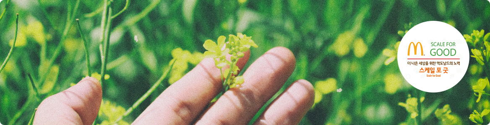

맥도날드 사회적 책임
맥도날드는 건전한 기업시민으로서의 책임을 다하고자 노력합니다.
지역 사회의 발전과 사람들의 행복에 기여하고, 지금보다 더 나은 세상을 만들기 위해 오늘도 나아갑니다.
‘스케일 포 굿(Scale for Good) 캠페인’은 무엇인가요?

스케일 포 굿 캠페인은 맥도날드가 책임 있는 글로벌 기업으로
전 세계적으로 발생하고 있는 사회, 환경적 문제해결에 기여하고자 시작한 글로벌 캠페인입니다.
맥도날드는 전 세계 120개 마켓에서 37,000여개 레스토랑을 운영하며 매일 6,900만명의 고객이 찾는
책임 있는 글로벌 기업입니다. 맥도날드의 작은 변화는 전 세계에 아주 큰 변화를 만들어 낼 수 있습니다.
글로벌 맥도날드 5대과제
-
전국 레스토랑에
친환경 고효율 LED 조명 설치 -
태양광 발전 레스토랑 시범 운영
(부산 및 제주 지역 5개 레스토랑) -
맥딜리버리에 친환경 전기바이크 사용
(일부 지역 운영 중) -
폐식용유를 친환경
바이오디젤 원료로 재활용
전 세계 레스토랑 및 사무실, 원재료 공급 및 유통 과정에서 발생하는 온실가스 배출량을 줄이겠습니다.
-
‘세계보건가구(WHO)’가 규정한
유해 항생제를 사용하지 않은
건강한 닭고기만을 사용 -
맥카페 커피 원두는
‘열대우림동맹’ 인증 받은
친환경 원두로 100% 교체 -
2025년까지 공급 받는 계란을
‘동물복지란’으로 교체예정
농장에서 레스토랑에 이르기까지 지속 가능한 원재료 도입을 위해 힘쓰겠습니다.
-
국내 외식업계 최초 ‘산림관리협의회’ 인증
친환경 포장재 사용 (2019년 상반기부터) -
레스토랑에서 제공하는 종이봉투에
친환경 재생용지 사용 -
레스토랑 내 다회용 컵 사용하여
1회 용품 감소 노력
친환경 포장재를 사용하고 더 많이 재활용해 지구를 살기 좋은 곳으로 만들겠습니다.
-
해피밀 등 가족 고객을 위한
메뉴에 보다 건강한 옵션 제공 (2019년 하반기부터) -
해피밀에 책을 제공하는
‘해피밀 리더스 프로그램’ 도입
(2019년 하반기부터) -
부산대학교 어린이 병원에 중증 어린이
환자와 가족들이 병원 근처에 머물며 치료
를 받을 수 있는 ‘로널드 맥도날드 하우스’ 건립 후원 (2018년 하반기 완공 예정)
어린이를 동반한 가족 고객에게 더욱 건강한 메뉴 옵션과 즐거운 경험을 제공하겠습니다.
-
‘단독기업형’ 프로그램
전 세계 퀵서비스레스토랑 업계 리더로써
쌓아온 노하우를 활용해 직원들이
외식산업 전문가로 성장할 수 있도록
본사교육 및 현장 훈련 진행 -
고용노동부와 함께 ‘일학습병행제’
시행하여 직원들이 일과 학업을 병행하며
전문가로 성장할 수 있도록 지원 -
‘대학연계형’ 프로그램
일을 하면서 학업을 지속하고자 하는
직원들에게 대학교육 및 학사학위
취득기회 제공
매년 100만명 이상의 직원들이 맥도날드에서 일하며 업무 역량을 키우는 동시에 학업을 병행하고 있습니다.